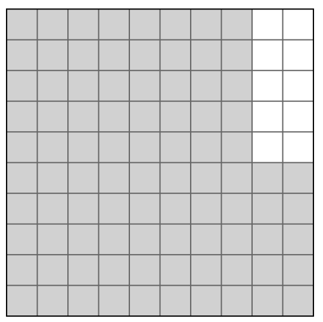
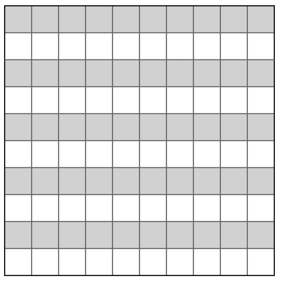

Calculate the area of the figure. Show all work.

Write each shaded portion as a percent, a decimal, and a fraction.
Write each shaded portion as a percent, a decimal, and a fraction.
Mr. Darcy could knit six ugly holiday hats in 90 minutes. How long will it take him to knit eight ugly holiday hats? Show your work.
Evaluate the expression \( (4n - 2)(7 - n) \) if \( n = 3 \). Show your work.
Consider the expression \( 2(x + 9) + 4x \).
a) Rewrite without parentheses and simplify.
b) If \( x = 2.1 \), what is the value?
When Jack began working at the candy factory, he could pack 75 boxes of 20 candies each hour. Now he packs 180 boxes of 20 candies each hour. How many more candies does he pack in an 8-hour shift now?
Simplify \( 4 \cdot 5 - 2^2 + 3(5 - 4) \)
Solve. 62% of 171
True or False. \( 2^3 = 3^2 \)
Calculate the area of the figure. Show all work.
Which is a better deal: 5 lbs for $2.75 or 7 lbs for $3.99? Show your work.
Solve. \( \frac{3}{8} \div \frac{1}{2} \)
Calculate the area of the shape below.

If 35% of a 60-question exam is about Distributive Property, how many questions are not?
Find at least two different ways to write:
a) \( 81 \)
b) \( \frac{64}{9} \)
It took \( \frac{1}{4} \) gallon of gas to drive \( 3\frac{1}{2} \) miles. How much gas per mile?
Selina bought a shirt 20% off. Original price was $5 more than sale price. What was original price?
Calculate the area of the figure. Show all work.

Solve. \( \frac{7}{8} \div 1\frac{1}{4} \)
Two trains travel 55 mph and 70 mph in opposite directions for 2 hours. How far apart?
Evaluate using \( x = \frac{1}{2} \), \( y = 3 \)
\( 6y^2 \)
\( 4x + 5y \)
Simplify \( 3^3 \cdot 7^2 - 8 \div 4 \)
Solve. 3% of 8
Generate equivalent expressions for:
a) \( 3(2 + x) \)
b) \( 2(x + 2y) + 3x \)
c) \( 5x + 10 \)
d) \( 24 + 18y \)
Solve. \( 2\frac{3}{8} \div \frac{5}{6} \)
True or False. \( 2 \cdot 2 \cdot 2 \cdot 3 \cdot 3 \cdot 3 = 6^3 \)
Calculate the area of the parallelogram.

Evaluate \( 8n(n - 2) \) if \( n = 5 \)